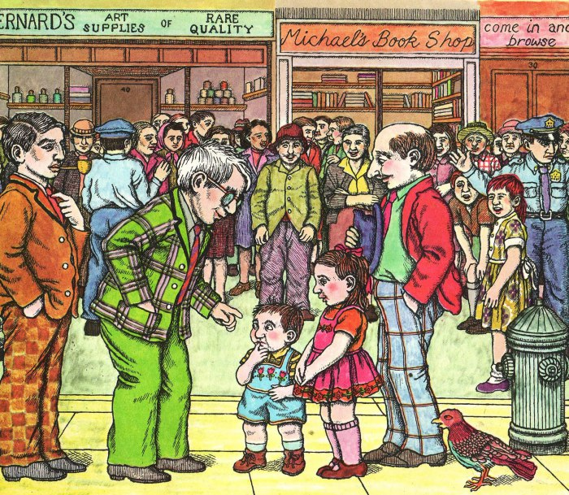

Load Testing: Finding a workable balance
Chris Winters (@cwinters) - Turnitin / Lightside Labs

Pittsburgh Techfest 2015 - goo.gl/MTZId4
Black magic
Is it?
A story

All about trade-offs

Goal: Learn enough to get by
Run through some types and expectations,
strengths of different tools,
and talk about generating and testing load.
Secondary: behavior and motivation
Not an expert!
Type: Random access
Every action is separate from every other action
Examples: catalog, search, blog
This is great! (if you can get it)
Random access ~~ Stress test

Random access tools: many many
- Vegeta
- http-perf
- ab
- wrk
- Siege
- Bees with machine guns
- blitz.io
- ...
Type: Varied workflow
Every action may change based on the results of previous actions
Examples: hospital admission, adaptive math
Difficult but fun; potentially brittle
Varied workflow ~~ simulation with smarts

Varied workflow tools
- Gatling
- JMeter
- Locust
- Pylot
- Multi-mechanize
Type: Predictable workflow
Every action may change but in ways knowable before running the test
Examples: shopping checkout, student writing
More straightforward
Predictable workflow ~~ Scripted session simulation

Predictable workflow tools
Both and neither...?
Random access tools support sessions poorly, if at all.
Varied workflow tools can be complicated to use and brittle,
possibly overkill for your app.
As it happens...
Scratching an itch is a thing
Our goals
Tool/s that:
- allows us to simulate many users moving through this flow,
- tells us where API bottlenecks exist so that we can
- investigate bottlenecks in detail using profiling or other tools
Our sample app: student writing
This may sounds familiar...
...it's actually a good example!
Plus, I'm lazy
Who are the main users?
Our case is pretty easy - students
Yours might not be -- maybe time for user research?
Did you see Stephanie's talk?
Start somewhere! Simple means it's ok to toss
What does a session look like?
- Student logs in and gets list of assignments
- Student chooses an assignment
- Student writes incrementally over a session
- Student checks score twice during session, including once at end
Simulating, step one
1. Student logs in and gets list of assignments
- What API calls does this user action trigger?
Finding triggered calls

Simulating, step one
1. Student logs in and gets list of assignments
- We're not actually doing this; we assume auth token exists
- ==> Our login process could be a bottleneck AND WE WOULDN'T KNOW
Simulating, step one
1. Student logs in and gets list of assignments
/pages/students/assignments- 'Fat' API call, lots of data
Simulating, step one
GET /pages/students/assignments
Authorization: Token {{student_token}}
GET /api/classes/enrolled
Authorization: Token {{student_token}}
Concern one: thundering herd?
Do we want all the students to login at once?
Hello PAUSE
Simulating, step one
Stagger start over two minutes (120 sec)
PAUSE {{random (0..120) * 1000}}
GET /pages/students/assignments
Authorization: Token {{student_token}}
GET /api/classes/enrolled
Authorization: Token {{student_token}}
Simulating, step two
2. student chooses assignment which loads previous drafts and scores
This choice is embedded in an ID in the next URLs
Simulating, step two
2. student chooses assignment which loads previous drafts and scores
...
GET /api/assignments/{assignment_id}/share?token={assignment_token}
Authorization: Token {{student_token}}
GET /pages/students/assignment_answers/{assignment_id}
Authorization: Token {{student_token}}
Feedback into API design
- These calls weren't always this way...
- Second call originally ~~ 100x calls (WAY too granular)
- Side effect of building our simulations
- Make sure you broadcast nuggets like this!
Presenting results, tips
- Always record the "before" for comparison
- Record it in the tool, ensure in ballpark of NewRelic (etc)
- Both "before" and "after" should be a representative sample, not
worst/best
- Some people think graphically, some with tables
- Boil down into user experience where possible
Simulating, step three
3. Student writes incrementally over a session
- We autosave ...if anything has changed
- Humans do not write at a uniform speed, it's bursty
Simulating, step three
For every sentence or two, we'll generate:
PAUSE {{random (0..120) * 1000}}
POST /api/assignments/{{assignment_id}}/autosave
Authorization: Token {{student_token}}
Content-Type: application/json
@posts/{{student_id}}/{{assignment_id}}_{{count}}.json
So far...
PAUSE at start to spreadGET assignments and classesGET assignment details and answersPAUSE and POST autosave a number of times
Simulating, step four
4. Student checks score twice during session, including once at end
Simulating, step four
POST /api/assignments/{{assignment_id}}/share
Authorization: Token {{student_token}}
Content-Type: application/json
@posts/{{student_id}}/{{assignment_id}}_signal_check.json
POLL GET /pages/students/signal_check/latest
[Wait=2000 Count=5 Status=200]
What does it mean?
- Results often communicated as average.
- Average is a lie!
If not average...
- Instead use percentiles: 50, 75, 95, 99 are common
- Distribution of experience, though sometimes you focus
- ...plus the 95% is a leader to other problems

_appearance.jpg#/media/File:Korra_(Season_4)_appearance.jpg){kind=link}
{kind=link}